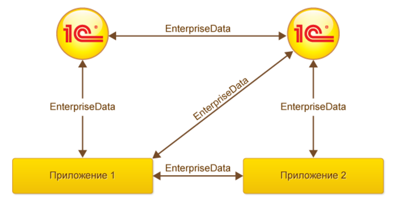

Какие важнейшие требования предъявляются к бизнес-приложениям? Одними из самых главных являются следующие задачи:
То, как решается в 1С первая задача, было кратко описано в разделе «Кастомизация и поддержка» этой статьи; мы еще вернемся к этой интересной теме в одной из будущих статей. Сегодня же речь пойдет о второй задаче, об интеграции.
Интеграционные задачи
Интеграционные задачи могут быть разными. Для решения одних достаточно простого интерактивного обмена данными – например, для передачи в банк списка сотрудников для оформления зарплатных пластиковых карт. Для более сложных задач может быть необходим полностью автоматизированный обмен данными, возможно, с обращением к бизнес-логике внешней системы. Есть задачи, носящие специализированный характер, вроде интеграции с внешним оборудованием (например, торговым оборудованием, мобильными сканерами и т.д.) или с унаследованными или узкоспециализированными системами (например, с системами распознавания RFID-меток). Крайне важно для каждой задачи выбрать наиболее подходящий механизм интеграции.
Возможности интеграции с 1С
Существуют различные подходы к реализации интеграции с приложениями 1С, какой из них выбрать – зависит от требований задачи.
Механизмы интеграции в платформе 1С:Предприятие
Импорт/экспорт файлов
Предположим, перед нами стоит задача двунаправленного обмена данными между приложением 1С и произвольным приложением. Например, нам нужно синхронизировать список товаров (справочник Номенклатура) между приложением 1С и произвольным приложением.
Для решения такой задачи можно написать расширение, которое выгружает справочник Номенклатура в файл определенного формата (текстовый, XML, JSON, …) и умеет считывать этот формат. В платформе реализован механизм сериализации прикладных объектов в XML как напрямую, через методы глобального контекста ЗаписатьXML/ЧтениеXML, так и с помощью вспомогательного объекта XDTO (XML Data Transfer Objects). Любой объект в системе 1С:Предприятие может быть сериализован в XML представление и наоборот. Эта функция вернет представление объекта в виде XML:
Функция Объект_В_XML(Объект)
ЗаписьXML = Новый ЗаписьXML();
ЗаписьXML.УстановитьСтроку();
ЗаписатьXML(ЗаписьXML, Объект);
Возврат ЗаписьXML.Закрыть();
КонецФункции
так будет выглядеть экспорт справочника Номенклатура в XML при помощи XDTO:
&НаСервере
Процедура ЭкспортXMLНаСервере()
НовыйСериализаторXDTO = СериализаторXDTO;
НоваяЗаписьXML = Новый ЗаписьXML();
НоваяЗаписьXML.ОткрытьФайл("C:\Data\Номенклатура.xml", "UTF-8");
НоваяЗаписьXML.ЗаписатьОбъявлениеXML();
НоваяЗаписьXML.ЗаписатьНачалоЭлемента("СправочникНоменклатура");
Выборка = Справочники.Номенклатура.Выбрать();
Пока Выборка.Следующий() Цикл
ОбъектНоменклатура = Выборка.ПолучитьОбъект();
НовыйСериализаторXDTO.ЗаписатьXML(НоваяЗаписьXML, ОбъектНоменклатура, НазначениеТипаXML.Явное);
КонецЦикла;
НоваяЗаписьXML.ЗаписатьКонецЭлемента();
НоваяЗаписьXML.Закрыть();
КонецПроцедуры
Путем несложной переделки кода экспортируем справочник в JSON. Товары будут записаны в массив; для разнообразия приведем англоязычный вариант синтаксиса:
&OnServer
Procedure ExportJSONOnServer()
NewXDTOSerializer = XDTOSerializer;
NewJSONWriter = New JSONWriter();
NewJSONWriter.OpenFile("C:\Data\Номенклатура.json", "UTF-8");
NewJSONWriter.WriteStartObject();
NewJSONWriter.WritePropertyName("СправочникНоменклатура");
NewJSONWriter.WriteStartArray();
Selection = Catalogs.Номенклатура.Select();
While Selection.Next() Do
NomenclatureObject = Selection.GetObject();
NewJSONWriter.WriteStartObject();
NewJSONWriter.WritePropertyName("Номенклатура");
NewXDTOSerializer.WriteJSON(NewJSONWriter, NomenclatureObject, XMLTypeAssignment.Implicit);
NewJSONWriter.WriteEndObject();
EndDo;
NewJSONWriter.WriteEndArray();
NewJSONWriter.WriteEndObject();
NewJSONWriter.Close();
EndProcedure
Далее останется только передать данные конечному потребителю. Платформа 1С:Предприятие поддерживает основные интернет-протоколы HTTP, FTP, POP3, SMTP, IMAP, включая их безопасные версии. Также для передачи данных можно использовать HTTP и/или Web-сервисы.
HTTP- и веб-сервисы
Приложения 1С могут реализовывать свои HTTP- и веб-сервисы, а также вызывать HTTP- и веб-сервисы, реализованные сторонними приложениями.
REST интерфейс и протокол OData
Начиная с версии 8.3.5 платформа 1С:Предприятие может автоматически формировать REST интерфейс для всего прикладного решения. Любой объект конфигурации (справочник, документ, регистр сведений и т.д.) можно сделать доступным для получения и модификации данных через REST интерфейс. В качестве протокола доступа платформа использует протокол OData версии 3.0. Публикация сервисов OData выполняется из меню Конфигуратора «Администрирование -> Публикация на веб-сервере», флажок «Публиковать стандартный интерфейс OData» должен быть помечен. Поддерживаются форматы atom/XML и JSON. После того, как прикладное решение опубликовано на веб-сервере, сторонние системы могут обращаться к нему через REST интерфейс с помощью HTTP запросов. Для работы с приложением 1С через протокол OData программирование на стороне 1С не требуется. Так, URL вида http://<сервер>/<конфигурация>/odata/standard.odata/Catalog_Номенклатура вернет нам содержимое каталога Номенклатура в формате XML — коллекцию элементов entry (заголовок сообщения пропущен для краткости):
<entry>
<id>http://server/Config/odata/standard.odata/Catalog_Номенклатура(guid'35d1f6e4-289b-11e6-8ba4-e03f49b16074')</id>
<category term="StandardODATA.Catalog_Номенклатура" scheme="http://schemas.microsoft.com/ado/2007/08/dataservices/scheme"/>
<title type="text"/>
<updated>2016-06-06T16:42:17</updated>
<author/>
<summary/>
<link rel="edit" href="Catalog_Номенклатура(guid'35d1f6e4-289b-11e6-8ba4-e03f49b16074')" title="edit-link"/>
<content type="application/xml">
<m:properties xmlns:d="http://schemas.microsoft.com/ado/2007/08/dataservices" xmlns:m="http://schemas.microsoft.com/ado/2007/08/dataservices/metadata">
<d:Ref_Key>35d1f6e4-289b-11e6-8ba4-e03f49b16074</d:Ref_Key>
<d:DataVersion>AAAAAgAAAAA=</d:DataVersion>
<d:DeletionMark>false</d:DeletionMark>
<d:Code>000000001</d:Code>
<d:Description>Кондиционер Mitsubishi</d:Description>
<d:Описание>Мощность 2,5 кВт, режимы работы: тепло/холод</d:Описание>
</m:properties>
</content>
</entry>
<entry>
<id>http://server/Config/odata/standard.odata/Catalog_Номенклатура(guid'35d1f6e5-289b-11e6-8ba4-e03f49b16074')</id>
<category term="StandardODATA.Catalog_Номенклатура" scheme="http://schemas.microsoft.com/ado/2007/08/dataservices/scheme"/>
...
Прибавляя к URL-у строку «?$format=application/json», получим содержимое каталога Номенклатура в формате JSON (URL видаhttp://<сервер>/<конфигурация>/odata/standard.odata/Catalog_Номенклатура?$format=application/json ):
{
"odata.metadata": "http://server/Config/odata/standard.odata/$metadata#Catalog_Номенклатура",
"value": [{
"Ref_Key": "35d1f6e4-289b-11e6-8ba4-e03f49b16074",
"DataVersion": "AAAAAgAAAAA=",
"DeletionMark": false,
"Code": "000000001",
"Description": "Кондиционер Mitsubishi",
"Описание": "Мощность 2,5 кВт, режимы работы: тепло/холод"
},{
"Ref_Key": "35d1f6e5-289b-11e6-8ba4-e03f49b16074",
"DataVersion": "AAAAAwAAAAA=",
"DeletionMark": false,
"Code": "000000002",
"Description": "Кондиционер Daikin",
"Описание": "Мощность 3 кВт, режимы работы: тепло/холод"
}, …
Внешние источники данных
В некоторых случаях обмен данными через внешние источники данных может оказаться оптимальным решением. Внешние источники данных – это прикладной объект конфигурации 1С, позволяющий взаимодействовать с любой ODBC-совместимой базой данных как на чтение, так и на запись. Внешние источники данных доступны как в Windows, так и на Linux.
Механизм обмена данными
Механизм обмена данными предназначен как для создания территориально распределенных систем на основе 1С:Предприятия, так и для организации обмена данными с другими информационными системами, не основанными на 1С:Предприятии. Этот механизм активно используется во внедрениях 1С, и спектр задач, решаемых с его помощью, весьма широк. Это и обмен данными между приложениями 1С, установленными в филиалах организации, и обмен между приложением 1С и сайтом интернет-магазина, и обмен данными между серверным приложением 1С и мобильным клиентом (созданным с помощью мобильной платформы 1С:Предприятия), и многое другое. Одно из ключевых понятий в механизме обмена данными – это план обмена. План обмена – это особый тип объекта прикладного платформы 1С, определяющий, в частности, состав данных, которые будут участвовать в обмене (какие именно справочники, документы, регистры и т.п.). План обмена содержит также информацию об участниках обмена (так называемых узлах обмена). Вторая составляющая механизма обмена данными – механизм регистрации изменений. Данный механизм автоматически отслеживает в системе изменения данных, которые должны быть переданы конечным потребителям в рамках плана обмена. С помощью этого механизма платформа отслеживает изменения, произошедшие со времени последней синхронизации, и позволяет минимизировать объем данных, передаваемый в рамках очередного сеанса синхронизации. Обмен данными происходит при помощи XML сообщений определенной структуры. Сообщение содержит данные, изменившиеся со времени последней синхронизации с узлом, и некоторую служебную информацию. Структура сообщений поддерживает нумерацию сообщений и позволяет получать подтверждения от узла-получателя о приеме сообщений. Такое подтверждение содержится в каждом сообщении, приходящем от узла-получателя, в виде номера последнего принятого сообщения. Нумерация сообщений позволяет понять платформе, какие данные уже были успешно переданы на узел-получатель, и избежать повторной передачи, передавая лишь данные, измененные со времени приема узлом-отправителем последнего сообщения с квитанцией о полученных узлом-получателем данных. При такой схеме работы обеспечивается гарантированная доставка даже при ненадежных каналах передачи и потере сообщений.
Внешние компоненты
В ряде случаев, при решении задач интеграции приходится сталкиваться со специфическими требованиями, например, протоколами взаимодействия, форматами данных, работа с которыми не предусмотрена в платформе 1С:Предприятие. Для такого круга задач в платформе предусмотрена технология внешних компонент, которая позволяет создавать динамически подключаемые модули, расширяющие функционал 1С:Предприятия. Типичным примером задачи с подобными требованиями, может служить интеграция прикладного решения 1С с торговым оборудованием, начиная от весов и заканчивая кассовыми аппаратами и сканерами штрих-кодов. Внешние компоненты могут быть подключены как на стороне сервера 1С:Предприятия, так и на клиентской части (включая, в том числе, и веб-клиент, а такжеследующую версию мобильной платформы 1С:Предприятия). Технология внешних компонент предусматривает достаточно простой и понятный программный (C++) интерфейс взаимодействия компоненты с платформой 1С:Предприятие, который должен реализовать разработчик. Возможности, открывающиеся при использовании внешних компонент, весьма широки. Можно реализовать взаимодействие по специфическому протоколу обмена данными с внешними устройствами и системами, встроить специфические алгоритмы обработки данных и форматов данных и т.п.
Устаревшие механизмы интеграции
В платформе доступны механизмы интеграции, которые не рекомендуется использовать в новых решениях; они оставлены из соображений обратной совместимости, а также на случай, если другая сторона не может работать с более современными протоколами. Один из них – работа с файлами формата DBF (поддерживается во встроенном языке с помощью объекта XBase). Другой устаревший механизм интеграции – использование технологии COM (доступно только на платформе Windows). Платформа 1С:Предприятие предоставляет два способа интеграции для Windows, использующие технологию COM: Automation-сервер и Внешнее соединение. Они очень похожи, но одним из принципиальных отличий является то, что в случае Automation-сервера запускается полноценное клиентское приложение 1С:Предприятие 8, а в случае внешнего соединения запускается относительно небольшой внутрипроцессный COM-сервер. То есть в случае работы через Automation сервер можно задействовать функционал клиентского приложения, выполнять действия, аналогичные интерактивным действиям пользователя. При использовании внешнего соединения можно использовать только функции бизнес-логики, причем их можно выполнять как на клиентской стороне соединения, где создается внуприпроцессный COM-сервер, так и осуществлять вызов бизнес-логики на стороне сервера 1С:Предприятия. Также технологию COM можно использовать для обращения к внешним системам из кода приложения на платформе 1С:Предприятие. В данном случае приложение 1С выступает в качестве COM-клиента. Но следует напомнить, что данные механизмы будут работать только в том случае, если сервер 1С функционирует в среде Windows.
Механизмы интеграции, реализованные в типовых конфигурациях
Формат EnterpriseData

В ряде конфигураций 1С (список ниже) на основе описанного выше платформенного механизма обмена данными реализован готовый механизм обмена данными с внешними приложениями, не требующий изменения исходного кода конфигураций (подготовка к обмену данными делается в настройках прикладных решений):
Для обмена данными используется формат EnterpriseData, основанный на XML. Формат является бизнес-ориентированным – описанные в нем структуры данных соответствуют бизнес-сущностям (документам и элементам справочников), представленным в программах 1С, например: акт выполненных работ, приходный кассовый ордер, контрагент, номенклатура и т. п. Обмен данными между приложением 1С и сторонним приложением может происходить:
В случае обмена через веб-сервис стороннее приложение будет инициировать сеанс обмена данными путем вызова соответствующих веб-методов приложения 1С. В остальных случаях инициатором сеанса обмена будет приложение 1С (путем помещения файла с данными в соответствующий каталог или отправкой файла с данными на настроенный почтовый адрес). Также на стороне 1С настраивается, с какой периодичностью будет происходить синхронизация (для вариантов с файловым обменом через каталог и электронную почту):
Квитирование сообщений
Приложения 1С ведут учет отправленных и полученных сообщений синхронизации и ожидают того же от сторонних приложений. Это позволяет задействовать механизм нумерации сообщений, описанный выше в разделе «Механизм обмена данными». Приложения 1С в ходе синхронизации передают только информацию об изменениях, произошедших с бизнес-сущностями со времени последней синхронизации (чтобы минимизировать объем передаваемой информации). При первой синхронизации приложение 1С выгрузит все бизнес-сущности (например, элементы справочника номенклатуры) в формате EnterpriseData в XML-файл (поскольку все они являются «новыми» для внешнего приложения). Стороннее приложение должно обработать информацию из пришедшего от 1С XML-файла и при следующем сеансе синхронизации поместить в файл, отправляемый в 1С, в специальную секцию XML, информацию, что сообщение от 1С за определенным номером успешно принято. Сообщение-квитанция является для приложения 1С сигналом, что все бизнес-сущности успешно обработаны внешним приложением и информацию о них передавать больше не нужно. Помимо квитанции XML-файл от стороннего приложения также может содержать данные для синхронизации со стороны приложения (например, документы реализации товаров и услуг). После получения сообщения-квитанции приложение 1С помечает все изменения, переданные в предыдущем сообщении, как успешно синхронизированные. Лишь несинхронизированные изменения в бизнес-сущностях (создание новых сущностей, изменение и удаление существующих) будут отправлены во внешнее приложение при следующем сеансе синхронизации.
При передаче данных от внешнего приложения в приложение 1С картина меняется на обратную. Внешнее приложение должно заполнить секцию-квитанцию в XML файле соответствующим образом и поместить бизнес-данные для синхронизации со своей стороны в формате EnterpriseData.
Упрощенный обмен данными без квитирования
Для случаев простой интеграции, когда достаточно только передавать информацию от стороннего приложения в приложение 1С и обратной передачи данных из приложения 1С в стороннее приложение не требуется (например, интеграция онлайн-магазина, передающего информацию о продажах в «1С:Бухгалтерию»), есть упрощенный вариант работы через веб-сервис (без квитирования), не требующий настроек на стороне приложения 1С.
Специализированные интеграционные решения
Существует типовое решение «1С:Конвертация данных», которое использует механизмы платформы для конвертации и обмена данными между типовыми конфигурациями 1С, но может быть также использовано для интеграции со сторонними приложениями.
Интеграция с банковскими решениями
Стандарт «Клиент банк», разработанный специалистами 1С более 10 лет назад, фактически стал стандартом индустрии в России. Следующий шаг в этом направлении – технология DirectBank, позволяющая отправлять платежные документы в банк и получать выписки из банка непосредственно из программ системы 1С:Предприятия нажатием одной кнопки в программе «1С»; при этом не требуется установка и запуск дополнительных программ на клиентский компьютер. Есть также стандарт по обмену данными в зарплатных проектах.
Прочее
Заслуживают упоминания протокол обмена между системой 1С:Предприятие и сайтом, стандарт обмена коммерческой информациейCommerceML (разработанный совместно с Microsoft, Intel, Price.ru и другими компаниями), стандарт обмена данными по операциям эквайринга.